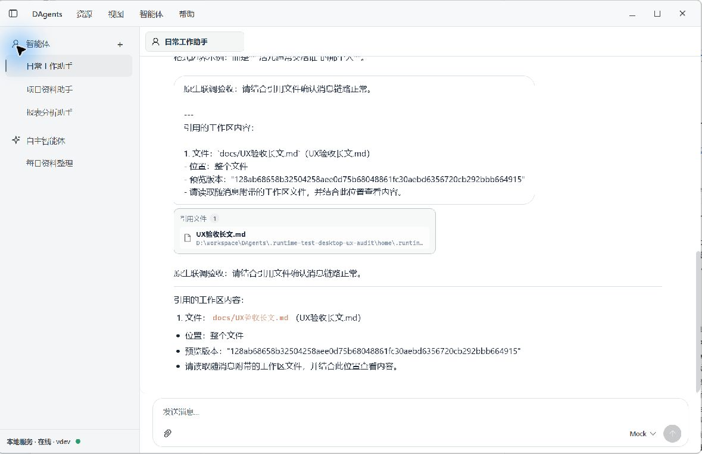
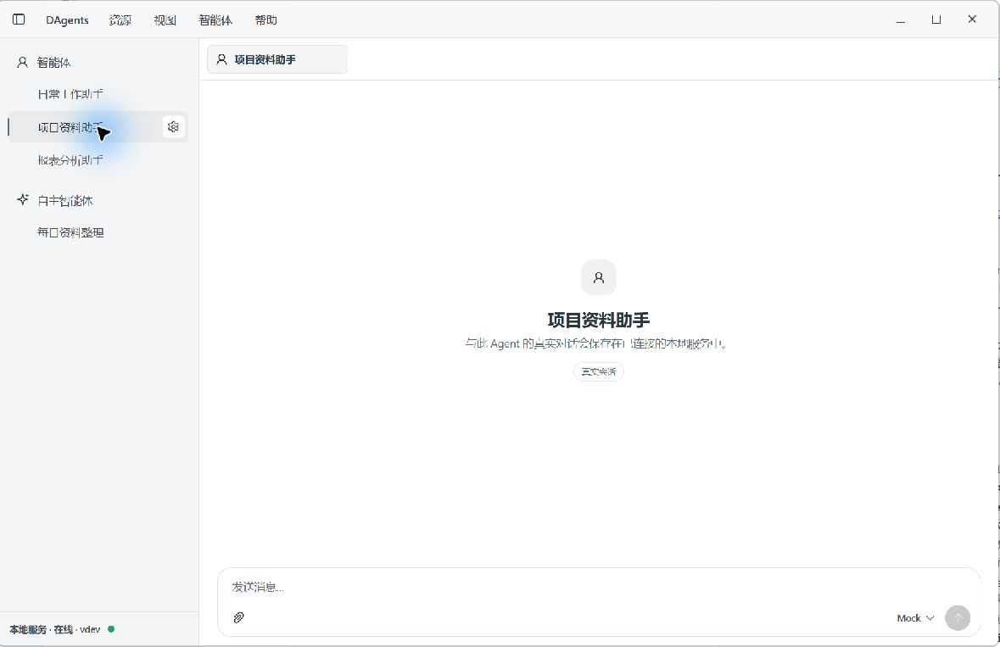
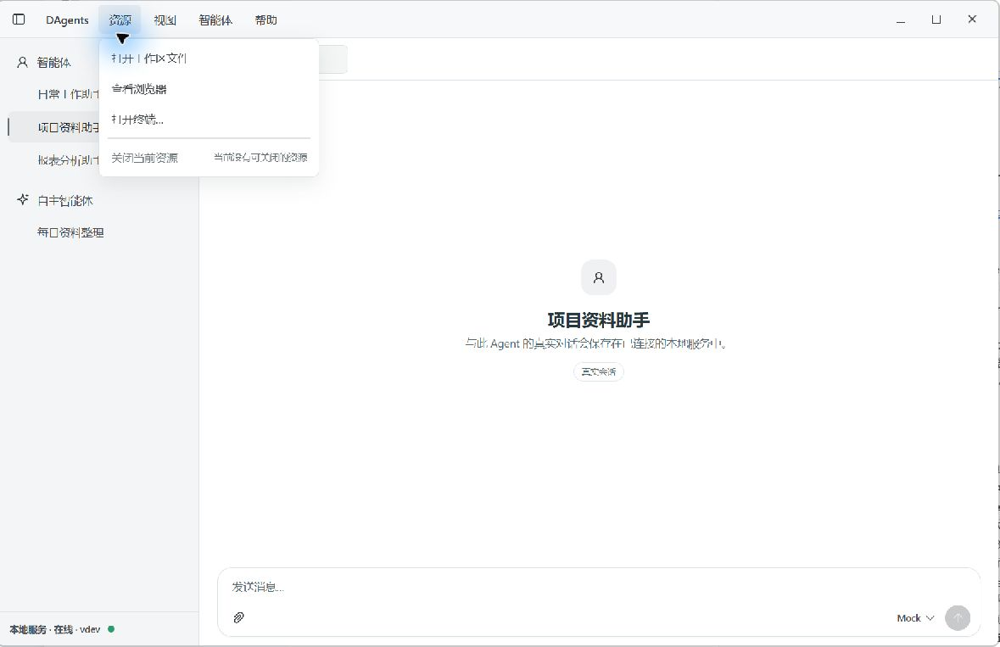
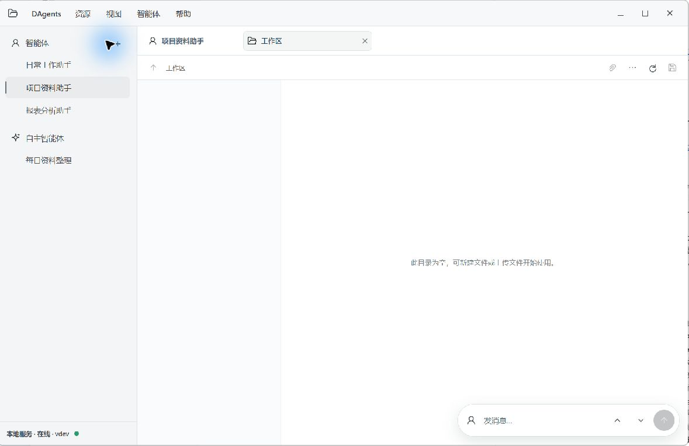
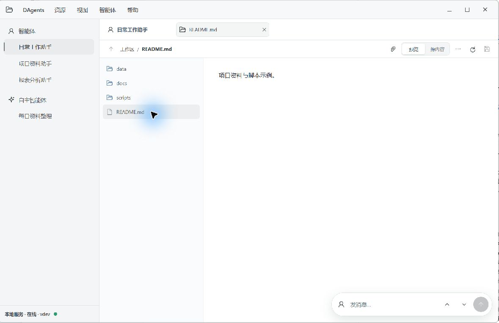
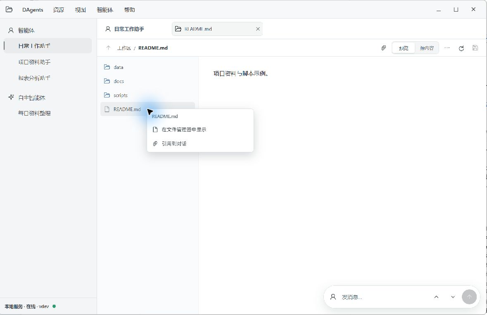
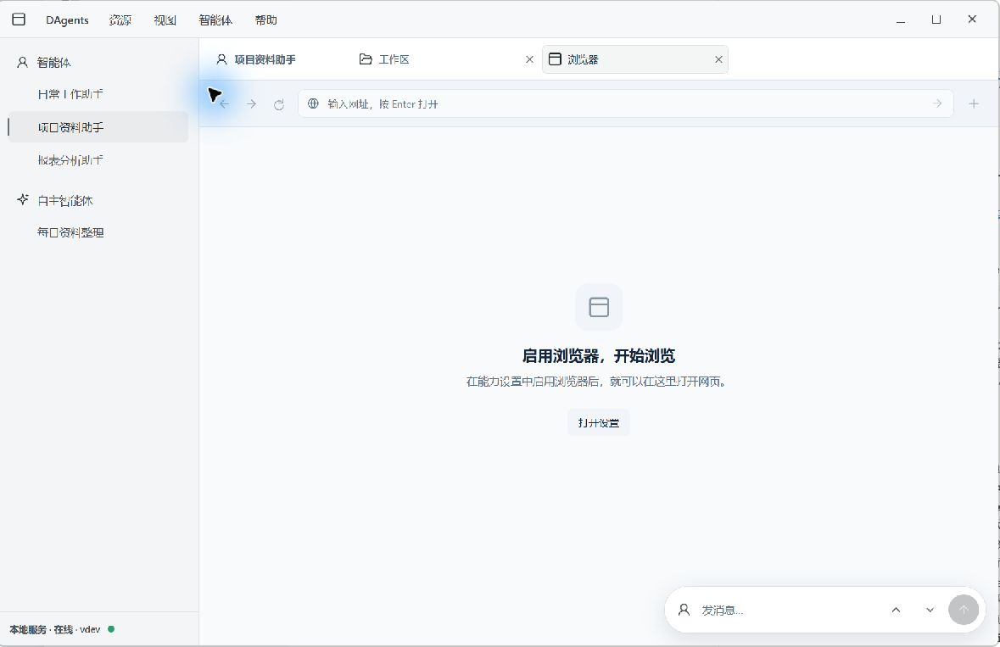
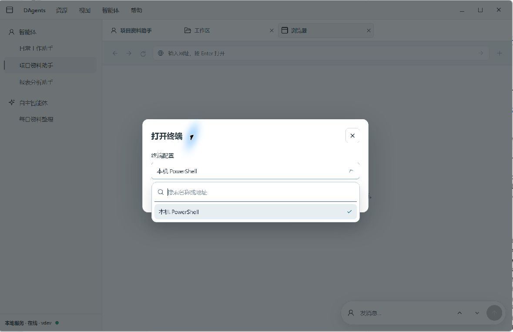

P1 · 流程摩擦
让工作区新建与导入动作就近可见
截图观察：工作区空态提示用户可以新建或上传文件，但两个动作收在右上角“更多”菜单中。用户刚进入空目录时，提示与可执行动作之间隔了一步探索。
建议：只在空目录或适用上下文中，把“新建文件”“导入本机文件”作为小型图标动作放到空态附近；用 tooltip 和无障碍名称说明操作，不增加常驻的大按钮行。
验收：首次打开空工作区能直接找到两项动作；键盘可达；有文件后工具栏仍保持紧凑。
产品体验审查 · 只读
保留目前浅色低饱和表面和线性图标。当前最值得做的是统一设置项的行结构、把常用资源操作放到更近的位置，并把技术状态信息收进可展开细节；无需整体换皮或增加第二套导航。
保留：浅色低饱和配色、细边框、线性图标、当前导航层级，以及模型选择器的选中勾和 Escape 关闭行为。终端选择弹窗也已简洁，保持当前交互即可。
收敛：设置页统一“标签—控件”的行起点和间距；主聊天空态说明怎么开始；资源入口给常用工作区、浏览器和终端路径一个更直接的位置；文件引用中的版本摘要从正文移到结构化细节。
审查依据：截图观察来自本目录原图；代码事实指向当前 Desktop 前端源码。尚未完成的屏幕和环境验证见最后一节。
建议风格基线（尚未实施）：保留当前顶栏尺寸与低饱和浅灰，不做整体换皮。统一正文/辅助文字级别与行高、32/36px 控件高度、图标尺寸以及 hover/focus 语义 token。雪花图形只在应用图标、托盘图标和空态做轻量呼应；避免满屏青色描边或新增渐变。
截图观察：工作区空态提示用户可以新建或上传文件，但两个动作收在右上角“更多”菜单中。用户刚进入空目录时，提示与可执行动作之间隔了一步探索。
建议：只在空目录或适用上下文中，把“新建文件”“导入本机文件”作为小型图标动作放到空态附近；用 tooltip 和无障碍名称说明操作，不增加常驻的大按钮行。
验收：首次打开空工作区能直接找到两项动作；键盘可达；有文件后工具栏仍保持紧凑。
源码中，MainChatPanel 将 turnError 作为可见的纯文本 alert 渲染；DesktopApp 的普通操作错误提示显示“操作未完成”，具体原因放在 tooltip 中。当前可见的重试按钮仅在 Tauri 且没有 active Agent 时显示，用于重试加载 Agent；不能据此说整个应用没有重试能力。离线聊天空态只显示本地服务错误/启动说明，没有就近动作。
建议：明确展示错误原因，并根据结构化错误码提供适用的下一步，例如切换模型或打开模型设置；只有现有恢复语义确认安全时才提供“重试本轮”。不能自动重放可能已产生工具副作用的回合。
验收：失败原因不依赖 hover 才能看到；操作入口与错误类型一致；重试不会重复执行有副作用的工具；离线态提供检查/打开本地服务设置的明确路径。
MainChatPanel.vue:402 · DesktopApp.vue:2077–2080 · DesktopApp.vue:2094–2099 · DesktopApp.vue:2085
截图观察：空会话展示“真实会话”和“与此 Agent 的真实对话会保存在已连接的本地服务中”。这解释了数据位置，却没有告诉用户可以先做什么。
建议：保留简短隐私/本地说明，把主提示换成一条任务导向的引导；可用低干扰的示例提示（例如“总结一个文件”），而不是再添加一块说明面板。
验收：第一次打开时，用户能从主句知道可以输入什么；存储说明保留为次要信息。
截图观察：打开工作区、浏览器和终端目前从顶栏“资源”菜单进入。当前结构清晰，但常用目的地都需要先打开菜单。
建议：在会话标签尾部提供单个“资源”加号入口，展开工作区、浏览器、终端三项；继续复用现有 tab，不加常驻搜索侧栏，也不堆多排大按钮。
验收：三类资源在一次动作内可见；开启资源后在标签中可辨认并可关闭；小宽度下菜单可折行或收拢。
基本设置（01）与 Auto 设置（03）的左侧标签字重、控件起点和行距不同，导致它们看起来不像同一设置区。设置导航包含 6 组、13 个入口；在约 762px 高的窗口中，靠下的入口需要滚动。
建议：统一标签字号/字重、控件起始列和行间距；把高频项留在基本区，低频项渐进收进高级区，不另造一套导航。
验收：基本设置与 Auto 设置同类字段起点一致；默认视口可到达主要字段；低频设置仍可发现且不增加导航层级。
模型选择器（02）目前有明确的选中勾，Escape 可关闭下拉。保留该行为；后续统一输入与 selector 高度时，避免改变其键盘操作。
验收：鼠标选择、键盘选择、选中反馈和 Escape 行为一致保留。
Auto 设置中的“Auto”“dreaming”技术词会与普通用户的任务语言混在一起，关闭状态、执行时间和“暂无经验”目前作为多行设置内容显示。
建议：将“Auto 设置”统一称作“自主运行”，将“每日 dreaming”统一称作“每日经验整理”；未开启时把状态、下次执行时间和经验摘要收为一行摘要，开启后再展开设置。手册继续采用文件系统；经验摘要与手册内容在界面上明确区分。
验收：同一概念在入口、字段和状态中用词一致；关闭时摘要仍说明当前状态，开启后可查看时间与经验内容；手册目录说明不被隐藏。
04 的 Mock 对话里，引用工作区文件时，用户正文包含“预览版本”及长 hash。源码确实把 `revision` 拼入发给模型的文本：workspace-references.js:75–86。这是 UI 消息构造的技术内容；不能据此断言真实模型也会重复回答它。
建议：保留用户的文件名、位置与注解；把版本摘要放入引用卡片的可展开技术细节，不显示在常规消息正文。
验收：普通聊天视图能辨认引用文件与定位；hash 可在需要诊断时查看；模型仍收到校验所需版本信息。


06 展示工作区、浏览器、终端均藏在“资源”菜单下。07 的空工作区说明可新建或上传，但新建和导入动作在“更多”菜单里。
建议：一个资源加号入口集中打开三种资源；空工作区就近提供两个小型动作。沿用现有图标风格、工具提示和标签结构。
验收：用户不需要猜“资源”菜单用途；空态提示旁边就有对应动作；打开的资源与原聊天之间可轻松切换。




保留项：10 中目录/文件图标区分清楚，选中行稳定，Markdown 预览和源内容切换入口可见；11 的单文件右键菜单只提供“在文件管理器中显示”“引用到对话”，动作语义简洁，Escape 可关闭。建议保留这套 per-file 菜单，不把相同操作堆回侧栏。
P3 · 视觉待验：悬浮输入栏上下箭头已有 title 与 aria-label，原生辅助功能检查能读出“展开智能体消息区”“收起快速消息栏”。本轮没有做无提示用户测试；可研究两种动作是否用更易区分的图形表达，不建议重复添加 tooltip。
验收：若后续更换图形，动作与现有 title/aria-label 对应且仍可键盘聚焦；保持紧凑布局。
08 的禁用空态有明确下一步“打开设置”，这是好的恢复路径。说明文案称“能力设置”，实际入口落在“共享服务”，名称不一致会让用户怀疑自己去了错误页面。
建议：把说明统一成设置页实际显示的“共享服务”，或者让跳转落到真正命名为“能力设置”的位置；保留当前空态按钮。
验收：按钮文案和落地页标题对应；返回浏览器后空态随启用状态更新。

09 的终端配置弹窗简洁，selector 支持搜索。按本轮操作观察，Escape 只关闭下拉并保留弹窗。这条交互应作为当前 selector 的保留行为，不重复提出已解决的问题。
验收：搜索、选择、Escape 关闭下拉和继续留在弹窗中的行为保持稳定。

全局提供 12/13/14px 的文本尺度，但桌面专用输入栏状态和模型选择器分别使用 11px、400 与继承的 500 字重、不同的行高。小字号辨识度需在实际显示缩放下验证。建议复用同一文本级别，并以颜色表达状态。
tokens.css:84–88 · workbench.css:3258–3260 · desktop-ui.css:1396 · desktop-ui.css:1472–1475
控件焦点样式分散：自定义 selector 使用主题色 2px 外框，Composer 输入框移除了自身 outline、仅让外层边框变色，部分桌面动作使用硬编码灰色环。建议定义统一且低饱和的 focus token，兼顾键盘可见性和用户偏好的克制描边。
UiSelect.vue:363–366 · workbench.css:2135–2157 · desktop-ui.css:1403 · desktop-ui.css:1660–1663
现有 reduced-motion 规则覆盖部分 Dock 和页面转场，但工作台工具旋转、导航刷新旋转和子 Agent 进度旋转仍定义独立动画。建议把持续旋转与大幅位移纳入同一偏好规则，用静态图标/文字维持状态信息。
desktop-ui.css:2360–2392 · workbench.css:1617 · workbench.css:2515 · ChildAgentProgressPanel.vue:252
全局主题/工作台样式与 Desktop 专用样式分别加载；工具栏基础规则在 workbench 中定义，Desktop 文件再覆盖尺寸、颜色和状态。建议逐步明确共享规则与 Desktop 变体的边界，并把颜色迁入语义 token，减少相同控件跨文件追样式。
main.js:6–9 · DesktopApp.vue:64 · workbench.css:3247–3271 · desktop-ui.css:1374–1396